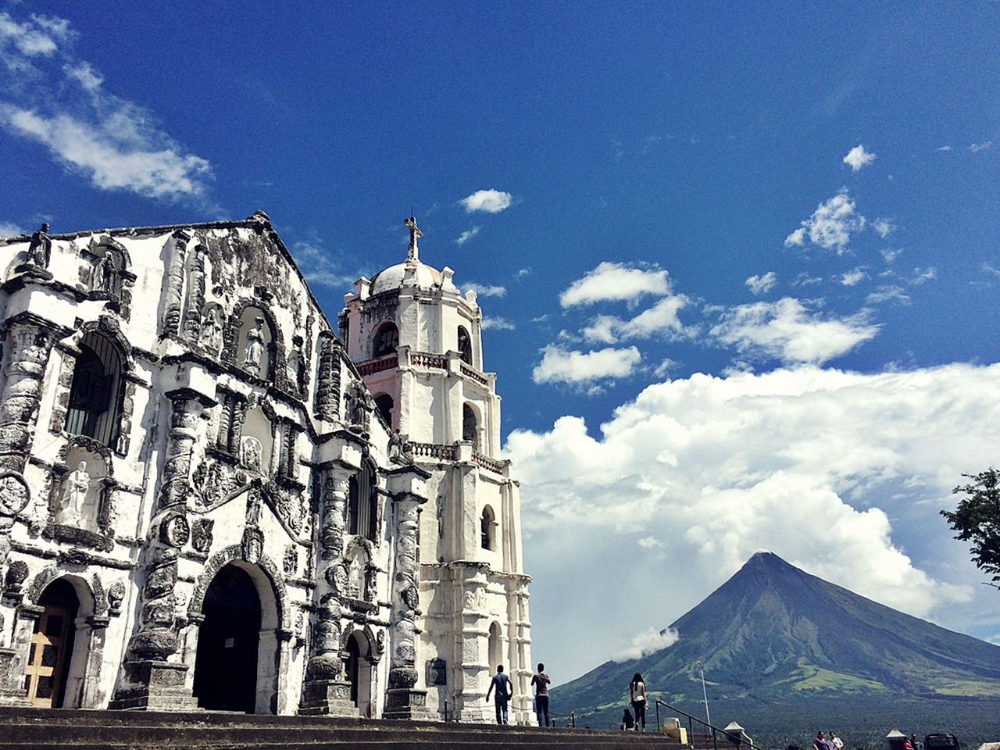
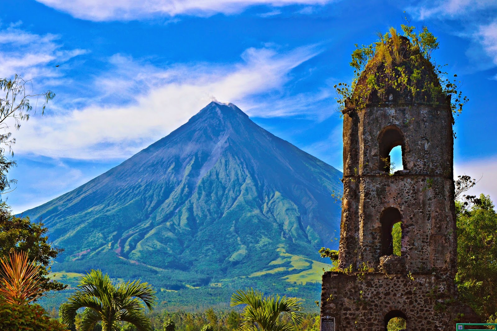
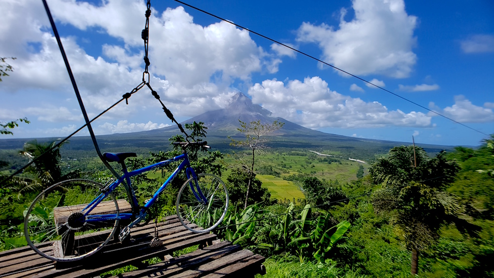
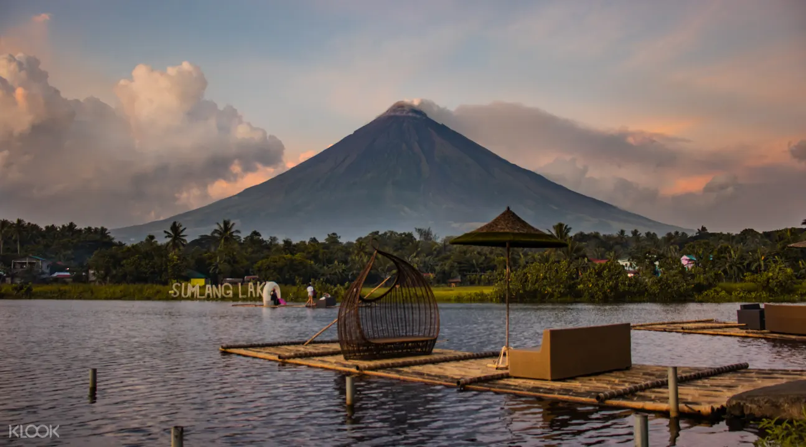
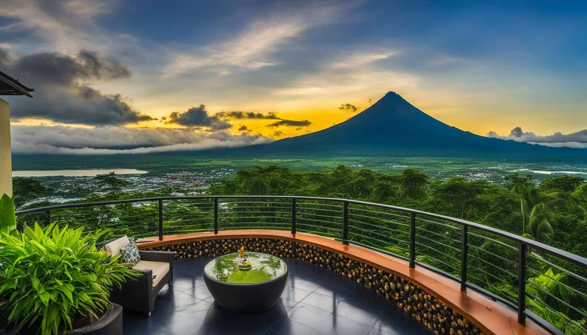
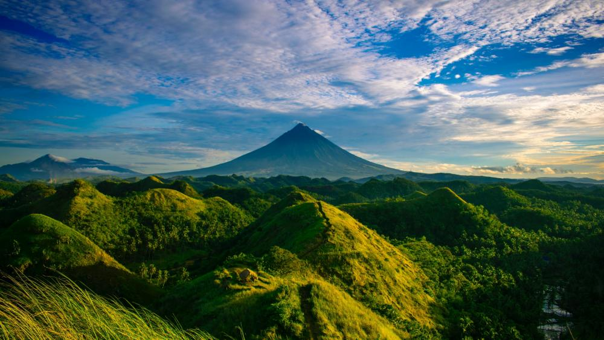

Mayon Volcano, located in the province of Albay in the Bicol Region of the Philippines, is renowned for its near-perfect symmetrical cone shape. Standing at 2,463 meters (8,081 feet), it is one of the most active volcanoes in the country and a prominent symbol of natural beauty and danger. Its frequent eruptions have shaped both the landscape and the lives of the people living around it, making it a vital part of Bicolano culture and identity.
The volcano is part of the Pacific Ring of Fire, a region prone to earthquakes and volcanic activity. Despite its destructive potential, Mayon’s breathtaking beauty attracts tourists, photographers, and scientists from around the world. Its lush green slopes contrast with the gray lava flows from past eruptions, creating a dramatic and picturesque landscape.
Mayon is not just a geological wonder but also a cultural icon, deeply embedded in local legends, art, and traditions. From ancient folklore to modern-day festivals, the volcano remains a source of pride and reverence for the Bicolano people. Its presence influences daily life, agriculture, and even spirituality in the region.
History
1616 Eruption – Mayon’s first recorded eruption occurred in 1616, spewing ash and lava. Spanish colonizers documented the event, marking the beginning of its historical volcanic activity. The eruption caused significant damage to nearby settlements. It set the precedent for future evacuations and disaster responses.
1814 Eruption – One of Mayon’s deadliest eruptions buried the town of Cagsawa, killing over 1,200 people. Only the bell tower of Cagsawa Church remains visible today as a grim reminder. The eruption also destroyed several other villages. Ashfall reached as far as present-day Legazpi City.
1897 Eruption – This violent eruption lasted for seven days, with lava flows reaching the lower slopes. It caused massive evacuations and economic disruption. The event was one of the most visually documented eruptions of the 19th century. It reinforced Mayon’s reputation as both beautiful and deadly.
1984 Eruption – A major eruption prompted the evacuation of over 73,000 people. Lava fountains and pyroclastic flows devastated nearby farmlands. The Philippine government and international agencies closely monitored the event. Despite the destruction, no fatalities were recorded due to effective disaster response.
2018 Eruption – A phreatic (steam-driven) eruption led to ash plumes rising kilometers into the sky. Thousands were evacuated as lava flows and pyroclastic density currents threatened communities. The eruption lasted several months, disrupting flights and agriculture. It highlighted the need for constant volcanic monitoring and preparedness.
Facts
Mayon’s near-perfect conical shape is the result of its stratovolcano structure, built up by layers of hardened lava, ash, and volcanic rocks from past eruptions. Unlike other volcanoes that may have irregular shapes due to explosive eruptions or landslides, Mayon’s eruptions typically produce viscous lava that flows symmetrically down its slopes. This consistent eruptive behavior over centuries has maintained its iconic form.
Scientists study Mayon’s eruptions to understand volcanic behavior better. Its frequent activity provides valuable data on magma movement, gas emissions, and pyroclastic flows. Despite its beauty, the volcano remains highly dangerous, with lahars (mudflows) and pyroclastic surges posing constant threats. Advanced monitoring systems, including seismographs and satellite imaging, help predict eruptions and save lives.
 Mayon Volcano along with the Daraga ChurchFolklore & Local Legends
The Legend of Daragang Magayon – The most famous legend tells of the beautiful princess Magayon (meaning "beautiful" in Bicolano) who fell in love with a warrior named Panganoron. Their tragic love story ended in death, and it is said that Mayon grew from Magayon’s grave, with Panganoron as the clouds that often shroud the peak.
The Fire of Gugurang – Ancient Bicolanos believed that the volcano was the home of Gugurang, their supreme god who controlled fire and punished the wicked. Eruptions were seen as his wrath against immoral acts.
The Battle of Gods – Another myth tells of a conflict between Gugurang and his rival, Asuang (the god of evil). Asuang’s attempts to steal Gugurang’s fire caused eruptions and earthquakes.
The Guardian Spirits – Locals believe that ancestral spirits dwell within Mayon, protecting the land. Offerings are sometimes made to appease them and prevent eruptions.
The White Rock (Lignon Hill) – A legend says that a giant white rock near Mayon was a piece of the volcano thrown during a battle between gods, now serving as a natural landmark.
Landmarks (Tourist Spots)
Cagsawa Ruins – The remains of an 18th-century church buried by the 1814 eruption, now a famous tourist spot and photography site.
 Cagsawa Ruins, Daraga AlbayLignon Hill – A viewpoint offering panoramic views of Mayon and Legazpi City, with a zipline adventure for thrill-seekers.
 Lignon Hill, Legazpi, AlbaySumlang Lake – A serene crater lake with bamboo raft rides, perfect for Mayon’s reflection shots.
 Sumlang Lake, Legazpi, ALbayMayon Skyline Viewdeck – Located in Tabaco City, this spot provides one of the closest views of the volcano’s summit.
 Mayon Skyline View Deck, Tabaco CityQuitinday Green Hills Formation – Rolling hills resembling Bohol’s Chocolate Hills, with a stunning Mayon backdrop.
 Quitinday Green Hills Formation, Camalig, AlbayMayon Volcano is more than just a natural wonder—it is the heart of Bicolano culture, history, and identity. Its eruptions have shaped the land and the resilience of the people, while its beauty inspires art, literature, and pride. The volcano’s presence is intertwined with local spirituality, as seen in myths and rituals that honor its power.
For Bicolanos, Mayon symbolizes both danger and majesty, reminding them of nature’s unpredictability and their ability to adapt. Festivals like the Magayon Festival celebrate this connection, blending tradition with modern appreciation. Whether as a scientific marvel, a tourist attraction, or a cultural icon, Mayon remains an enduring symbol of the Bicol Region’s strength and beauty.
Other Posts
Daraga Church
One of the few of Albay’s heritage churches that withstood the effects of Mayon volcano’s eruptions is the Daraga Church or also known as Nuestra Señora de la Porteria Parish Church. Perched on a hill with a commanding view of the majestic Mayon Volcano, Daraga Church stands as a lasting testament of faith, artistry, and resilience of Albayanos.
Farm Plate
If you think Daraga, Albay is only about historic ruins and the iconic Mayon Volcano, think again. This vibrant town is not only rich in heritage—with churches, colonial structures, and landscapes that echo centuries of Filipino history—but also brimming with modern attractions that reflect its growth, creativity, and resilience. And nestled quietly in its scenic hillsides lies one of the most delightful surprises in Bicol: FarmPlate.
Budiao Church Ruins
The first settlers of the town of Daraga came from a place called Budiao. Under the leadership of Juan Salcedo, the Spaniards arrived and established this village. The name "Budiao" is derived from the word "badjao," which means "the greatest," as demonstrated by the "ilustrados" (educated elite) among the spectators of bullfights. In Budiao, there was a designated area for the battle between men and bulls, following a tradition reminiscent of ancient Rome.
Cagsawa Ruins
The Cagsawa Ruins (also spelled as Kagsawa, historically spelled as Cagsaua) are the remnants of a 16th-century Franciscan church, the Cagsawa church. It was originally built in the town of Cagsawa in 1587 but was burned down and destroyed by Dutch pirates in 1636. It was rebuilt in 1724 by Fr. Francisco Blanco but was destroyed again, along with the town of Cagsawa, on February 1, 1814, during the eruption of Mayon Volcano.